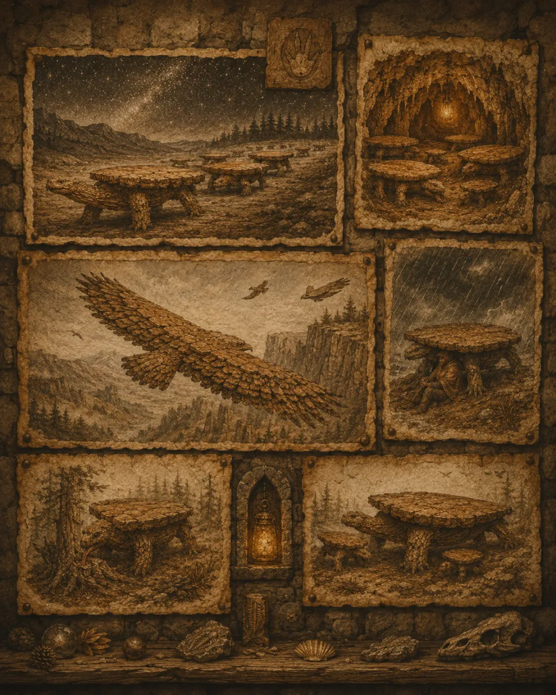
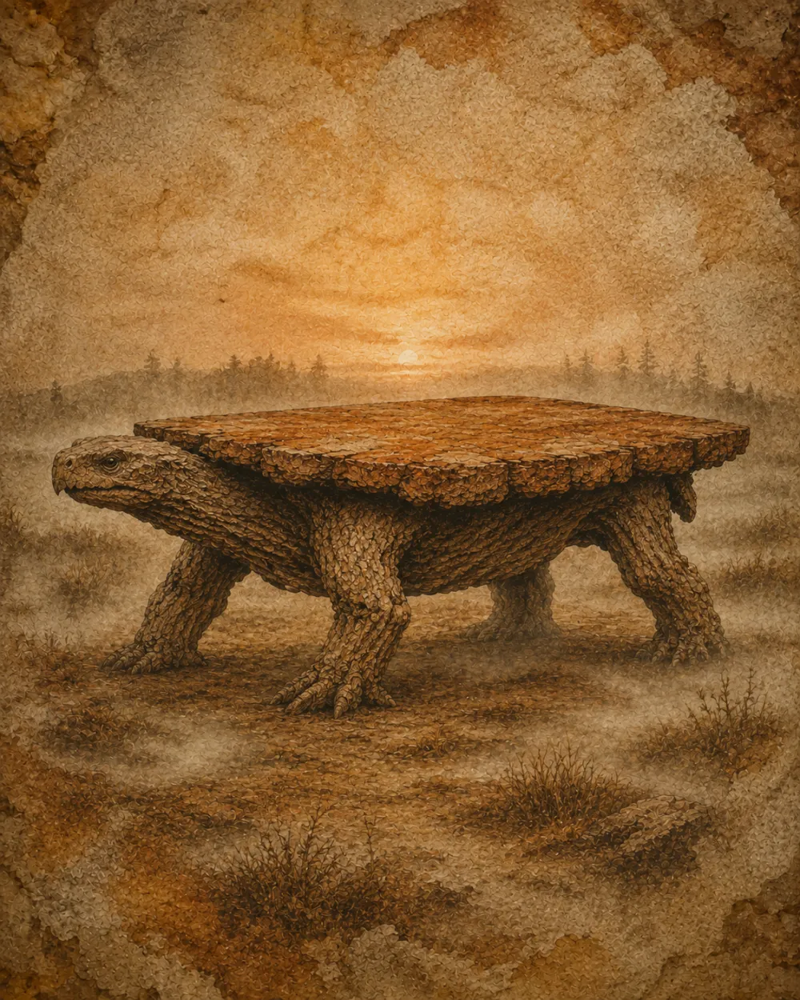
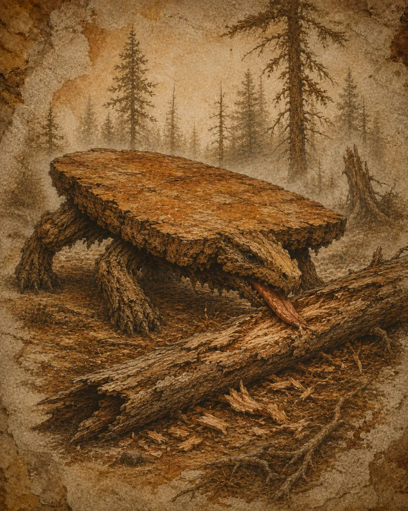
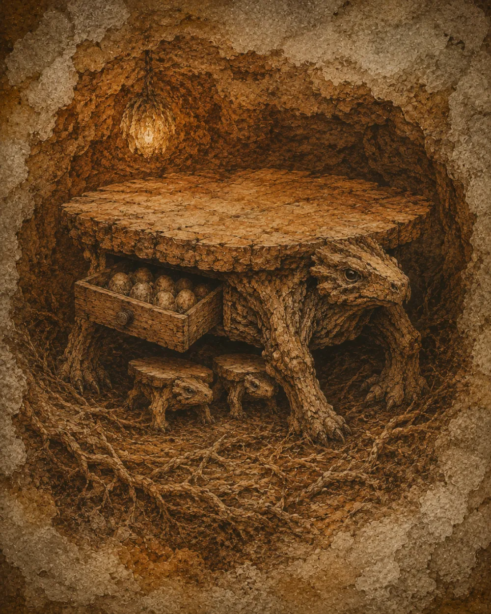

Naturalist plates
Gallery
The figured records of the nine species, and the composite plate of the herd on the misty plain.






The figured records of the nine species, and the composite plate of the herd on the misty plain.



